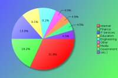

Pittsburgh Perl Workshop 2014 - Survey Results
The following survey results are a simple presentation of the raw data.
No attempt has been made to analyse the data and compare with previous
years. See forthcoming PDFs for more in depth analysis.
Click on pie charts to view larger image version.
Demographics (required)
These questions will help us understand who our attendees are.
Attendees:
| Count | Description |
|---|
| 22 | Responded |
| 66 | No Response |
| 88 | Total |
| 25 | Response Percentage |
Gender:
| Count | Description |
|---|
| 20 | Male |
| 2 | Female |
| 0 | Decline to state |
Age Band:
| Count | Description |
|---|
| 0 | under 20 |
| 7 | 20 - 29 |
| 7 | 30 - 39 |
| 6 | 40 - 49 |
| 1 | 50 - 59 |
| 1 | 60 and over |
Job Type:
If your position covers many roles, please base this on your most senior responsibility. Also base this on the role you perform, rather than your job title. For example, a 'QA Developer' would be a 'Developer' role, and 'Information Manager' would a Manager role (Technical or Non-Technical depending upon your responsibilites)
| Count | Description |
|---|
| 3 | CEO/Company Director/Senior Manager |
| 0 | Non-Technical Manager |
| 0 | Technical Manager |
| 0 | Technical Architect/Analyst |
| 13 | Developer |
| 3 | Engineer |
| 1 | SysAdmin |
| 0 | Student |
| 0 | Lecturer/Teacher/Trainer |
| 1 | Human Resources |
| 0 | Researcher |
| 0 | Unemployed |
| 1 | Other |
If 'Other' please enter your professional job role or title:
- Software Development Coach
Industry:
If you or your company undertake work within mulitple industry sectors, please select the primary one you are currently working within.

| Count | Description |
|---|
| 0 | Automotive |
| 2 | Education |
| 2 | Engineering |
| 4 | Finance |
| 1 | Government |
| 3 | IT Services |
| 7 | Internet/Web |
| 1 | Legal |
| 0 | Logistics |
| 1 | Media/Entertainment |
| 0 | Medical/Healthcare |
| 0 | Property |
| 0 | Research |
| 0 | Retail |
| 0 | Telecommunications |
| 0 | Travel |
| 0 | Unemployed |
| 1 | Other |
If 'Other' please enter your industry sector:
Region:
Please note this is the region you were a resident in, prior to attending the conference.
| Count | Description |
|---|
| 21 | United States |
| 1 | Canada |
| 0 | South America |
| 0 | Europe |
| 0 | Asia |
| 0 | Australaisa |
| 0 | Africa |
The Perl Community, YAPCs & Workshops
These questions are designed to help us understand our attendees level of involvement in the Perl community.
How do you rate your Perl knowledge?
| Count | Description |
|---|
| 1 | Beginner |
| 9 | Intermediate |
| 10 | Advanced |
How long have you been programming in Perl?
| Count | Description |
|---|
| 2 | less than a year |
| 2 | 1-2 years |
| 3 | 3-5 years |
| 3 | 5-10 years |
| 10 | more than 10 years |
How many Perl Workshops have you attended?
| Count | Description |
|---|
| 4 | Never attended one |
| Attended Workshops | 1 | 2 | 3 | 4 | 5 | 6 | 7 | total |
|---|
| Pittsburgh Perl Workshop | 7 | 5 | 2 | - | - | 2 | 1 | 42 |
| DC / Baltimore Perl Workshop | 1 | 4 | 1 | - | - | - | - | 12 |
| Perl Oasis Workshop | 2 | - | 2 | - | - | - | - | 8 |
| any European Perl Workshops | 1 | - | - | - | - | - | - | 1 |
| Other Perl Workshops | 3 | 1 | 1 | - | - | - | - | 8 |
How many previous YAPCs have you attended?
| Count | Description |
|---|
| 5 | Never attended one |
| Attended YAPCs | 1 | 2 | 3 | 4 | 5 | 6 | 7 | 8 | 9 | 10 | 11 | 12 | 13 | 14 | 15 | 16 | total |
|---|
| YAPC::NA | 5 | 1 | 4 | 1 | 1 | 2 | - | 1 | - | - | - | - | - | - | - | 2 | 80 |
| YAPC::Europe | 2 | - | - | - | - | - | - | - | - | - | - | 1 | - | - | - | - | 14 |
Do you plan to attend a future YAPC/Workshop?
| Count | Description |
|---|
| 22 | Yes |
| 0 | Maybe |
| 0 | Don't Know |
| 0 | No |
If no, could you tell us why?
Particularly if this is your first Workshop, we would like to understand why you would not be able or interested in attending another event like it.
- Great event and 1st time I attended, will more than likely attend next years, and as many PPW's as I can in the future.
Are you a member of a local Perl Mongers user group?
| Count | Description |
|---|
| 13 | Yes |
| 9 | No |
If not, do you plan to find one or start one?
| Count | Description |
|---|
| 1 | Yes |
| 5 | Maybe |
| 2 | Don't Know |
| 2 | No |
What other areas of the Perl Community do you contribute to?
| Count | Description |
|---|
| 12 | I'm a CPAN Author |
| 3 | I'm a CPAN Tester |
| 6 | I'm a Perl event organiser (e.g. YAPC, Perl Workshop, QA Hackathon, local technical meetings, etc.) |
| | I'm a board or committee member of a recognised Perl body (e.g. TPF, EPO, YEF, JPF, etc.) |
| 3 | I'm a Perl project developer (e.g. Rakudo, Catalyst, Dancer, Padre, etc.) |
| 4 | I have a technical blog (e.g. on blogs.perl.org or a personal blog) |
| 9 | I use or contribute to PerlMonks, Stackoverflow or other discussion forums |
| 13 | I use IRC (e.g. #perl, #yapc, #london.pm, etc.) |
| 4 | I contribute to Perl mailing lists (e.g. P5P, Perl QA, etc) |
| 2 | other ... |
If 'Other' please enter your area of contribution
- I preach the good word...of Perl
- intend to contribute to CPAN
- Sponsoring/Recruiting
Pittsburgh Perl Workshop 2014
Regarding Pittsburgh Perl Workshop 2014 specifically, please answer the following as best you can.
When did you decide to come to this conference?
| Count | Description |
|---|
| 8 | I'm now a regular Pittsburgh Perl Workshop attendee |
| 1 | After YAPC::NA 2014 |
| 1 | After reading a blog post about the Pittsburgh Perl Workshop |
| 1 | I was nominated to attend by manager/colleague |
| 4 | I was recommended to attend by friend/colleague |
| 1 | After reading the Perl Weekly |
| 0 | After seeing a link or advert on a Perl specific website |
| 0 | After seeing a link or advert on a non-Perl website |
| 2 | After seeing a link on Twitter, Facebook or other social media website. |
| 0 | After reading an email sent to a mailing list I was in |
| 0 | After receiving promotional information through my school |
| 0 | After seeing other promotions online/in the press |
| 4 | other ... |
If 'Other', what else helped you decide?
- After being hired as a Perl Developer
- After meeting with Dan Wright to sponsor
- After seeing the tilt announcement
- AFter talking to one of last year's attendee
Were you a speaker?
Note that "similar conferences" includes other Workshops and/or YAPCs, as well as Linux, Open Source or large technical events.
| Count | Description |
|---|
| 9 | No |
| 3 | No, but I have spoken before at similar conferences |
| 7 | Yes, and I have spoken before at similar conferences |
| 3 | Yes, and it was my first time as a speaker |
If you were a speaker, would you have been able to attend if you hadn't been speaking?
| Count | Description |
|---|
| 9 | Yes |
| 1 | No |
If you weren't a speaker, would you consider speaking at a future conference?
| Count | Description |
|---|
| 10 | Yes |
| 0 | No |
| 1 | Ask me later |
What was your motivation for coming?
| Count | Description |
|---|
| 7 | the list of speakers |
| 5 | the quality of the talks scheduled |
| 8 | to be a speaker |
| 11 | to meet with Perl/project co-contributors |
| 16 | to socialise with Perl geeks |
| 4 | the career fair |
| 2 | the "From Zero to Perl" course |
| 8 | to visit Pittsburgh |
| 2 | other ... |
If 'Other' please let us know your motivation for coming
- learn/hear about interesting perl projects/applications
- To learn more about Perl
What aspects of the conference do you feel gave value for money?
| Count | Description |
|---|
| 16 | the talks / speakers |
| 7 | the conference venue |
| 13 | the city of Pittsburgh |
| 10 | the hallway track |
| 15 | the attendees |
| 1 | other ... |
If 'Other' please enter your suggestions
What kinds of talks would you prefer at future Pittsburgh Perl Workshops?
| Count | Description |
|---|
| 0 | More beginner level talks |
| 6 | More intermediate level talks |
| 5 | More advanced level talks |
| 7 | It's about right |
| 3 | No preference |
Are there any topics you would specifically like to see featured?
- development environment tools. how does ingy make things work? how to set up for contributing to multiple CPAN projects on github, running those tests, making distributions, etc. and using john's app:gitgot
- functional programming, different styles of OO, different styles of testing
- I like hearing about stuff from other languages and modern Perl techniques that are in line with practices in other languages (like Java). Also more Functional Programming stuff would be cool.
- I think "how things work" talks are very informative. For example, MJD's pseudohashes talk taught me things about perl I would never have encountered otherwise. They predated me, and I had no idea why delete $array_ref->[0] should be a thing.
- I would like to see more practical talks about particular issues that Perl developers deal with. For example finding and using common libraries, using relational databases, etc.
- Unicode talks are always good to have over and over again. More meta talks about finding jobs, telecommuting, work environments, collaboration on OSS projects, etc. I also like talks about other languages that share features someone has pulled in from an idea found elsewhere.
- Would it be appropriate to have companies who are participating in the career fair have a speaker to discuss what the company does, recruiting needs, etc.?
How do you rate the workshop?
How would you rate your overall satisfaction of the following areas of the workshop?
| Choices | 1 | 2 | 3 | 4 | 5 |
|---|
| Newsletters/Updates | 9 | 8 | 1 | - | - |
|---|
| Web site | 8 | 12 | 1 | - | - |
|---|
| Registration process | 13 | 7 | 1 | - | - |
|---|
| Directions/Maps | 9 | 8 | - | - | - |
|---|
| Content of the talks | 5 | 12 | 3 | - | - |
|---|
| Schedule efficiency | 10 | 10 | - | - | - |
|---|
| Social events | 7 | 9 | - | - | - |
|---|
| Parking | 2 | 8 | 4 | - | - |
|---|
| Facilities | 8 | 12 | 1 | - | - |
|---|
| Wi-fi | 8 | 8 | 1 | 3 | - |
|---|
| Food service | 6 | 11 | 3 | 1 | - |
|---|
| Staff | 18 | 3 | - | - | - |
|---|
| Overall experience | 12 | 9 | - | - | - |
|---|
| Value for price | 13 | 8 | - | - | - |
|---|
Key:
1 = Very Satisfied
2 = Somewhat satisfied
3 = Somewhat un-satisfied
4 = Very un-satisfied
5 = N/A
What was your opinion on hosting this conference at a hotel?
| Count | Description |
|---|
| 13 | I believe that hosting this conference at a hotel added value to the event |
| 4 | While hosting this conference at a hotel is an improvement, I did not like this specific hotel |
| 1 | This conference is better suited to be hosted at an academic institution |
| 3 | I have no preference on the event location |
Where did you stay during the conference?
| Count | Description |
|---|
| 14 | I stayed at the conference hotel |
| 1 | I stayed at a different hotel |
| 1 | I stayed with family / friends |
| 6 | I live locally |
| 0 | Other |
Will you attend the Pittsburgh Perl Workshop in 2015?
| Count | Description |
|---|
| 14 | Yes |
| 0 | No |
| 8 | Undecided |
Conference Attendance
In order to help future organisers gauge an appropriate conference fee, how much would you (or your company) have paid for a conference ticket? Feel free to provide an answer for all rates, where corporate rate would be paid for by your company (including a Master Class place), standard rate would be the regular price paid by attendees in paid employment, and lastly the concession rate for anyone who holds proof that they are in fulltime education or are unemployed.
Corporate Rate:
| Count | Fee |
|---|
| 1 | $ 100 |
| 3 | $ 150 |
| 1 | $ 200 |
| 2 | $ 250 |
| 1 | $ 300 |
Standard Rate:
| Count | Fee |
|---|
| 2 | $ 100 |
| 1 | $ 120 |
| 2 | $ 125 |
| 4 | $ 150 |
| 1 | $ 250 |
Concession Rate:
| Count | Fee |
|---|
| 2 | $ 100 |
| 2 | $ 40 |
| 2 | $ 50 |
| 1 | $ 60 |
| 1 | $ 75 |
How did you pay for the conference fee?
| Count | Description |
|---|
| 5 | N/A - I was a speaker |
| 2 | N/A - I was a sponsor |
| 5 | My company paid |
| 8 | I paid out of my own pocket |
| 0 | I wasn't able to attend |
If the event price was increased to $150 regular / $40 student next year, would that affect your decision to return to Pittsburgh Perl Workshop?
| Count | Description |
|---|
| 3 | Yes |
| 16 | No |
| 0 | I will not return next year, for other reasons |

{kind=link}
{kind=link}
{kind=link}
{kind=link}
{kind=link}
{kind=link}